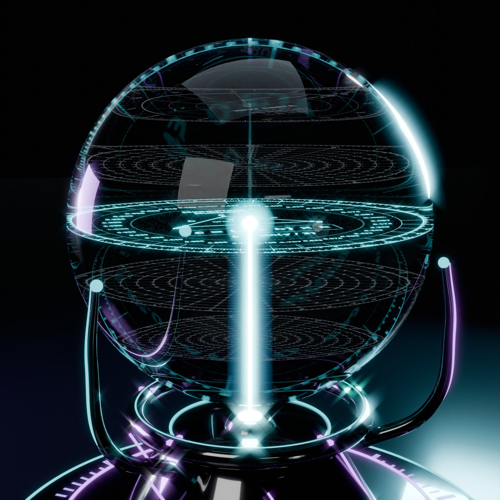
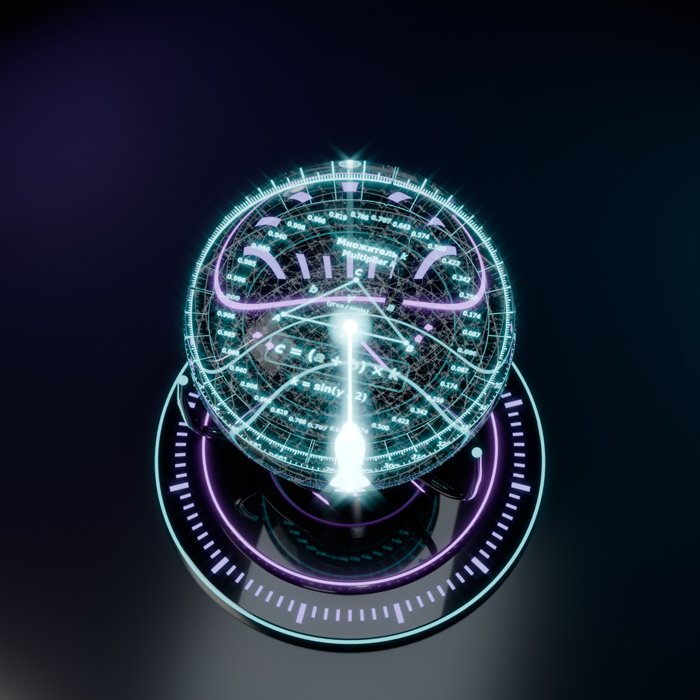
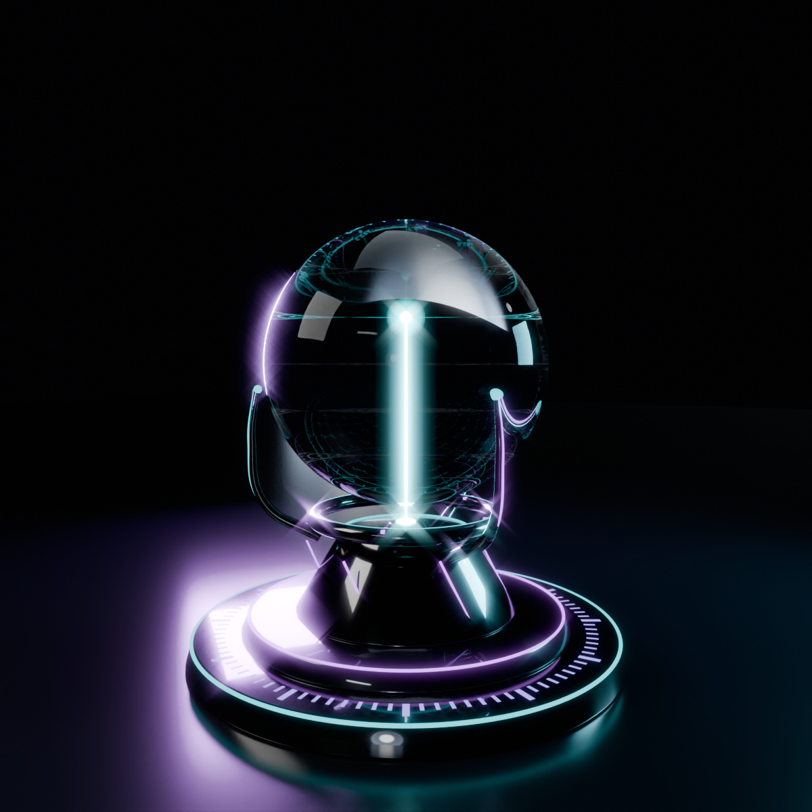
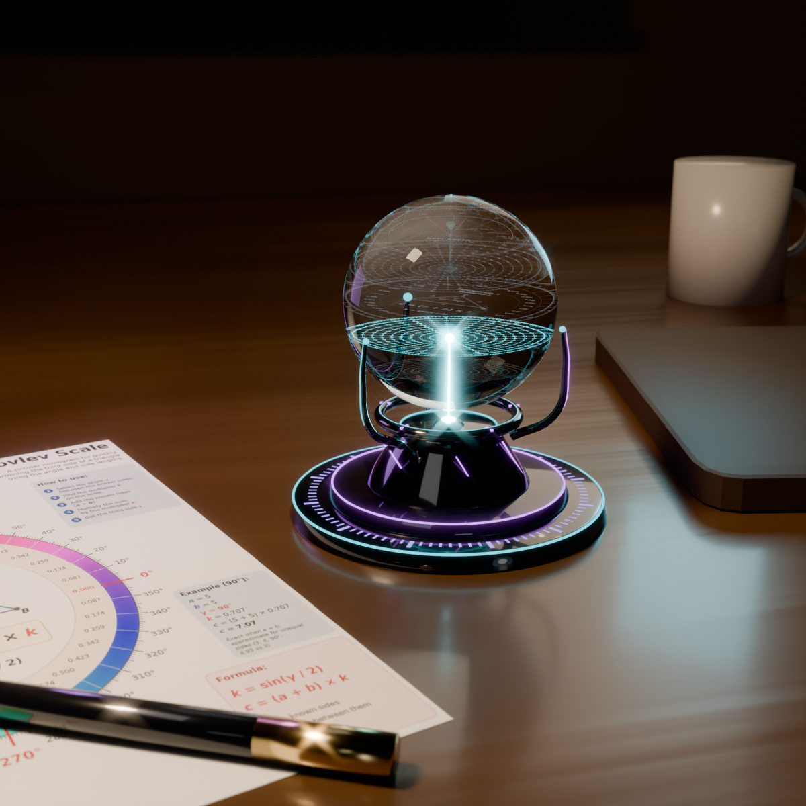

Шкала Яковлева — круговая номограмма для быстрого определения третьей стороны треугольника.
Yakovlev Scale is a circular nomogram for quickly determining the third side of a triangle.
Шкала Яковлева — это удобная шпаргалка на основе классической формулы длины хорды: для двух равных сторон a третья сторона равна c = 2a · sin(γ/2). Таблицы хорд известны со времён Птолемея (II век н. э.), а номограммы для треугольников широко применялись до появления калькуляторов. Новое здесь — не математика, а подача: наглядная круговая шкала и готовая таблица, по которым третью сторону можно прикинуть без синусов и корней.
The Yakovlev Scale is a practical cheat sheet based on the classic chord-length formula: for two equal sides a, the third side is c = 2a · sin(γ/2). Chord tables date back to Ptolemy (2nd century AD), and triangle nomograms were widely used before calculators. What is new here is not the mathematics but the presentation: a visual circular scale and a ready-made table for estimating the third side without sines or roots.

По кругу отложены углы от 0° до 360°, и против каждого угла стоит готовый множитель k = sin(γ/2). Найдите угол между известными сторонами, возьмите множитель напротив него, сложите стороны и умножьте сумму на множитель. Получится третья сторона: c = (a + b) × k. Синусы и корни считать не нужно, хватит одного сложения и одного умножения.
Angles from 0° to 360° run around the circle, and each angle has a ready multiplier k = sin(γ/2). Find the angle between the known sides, take the multiplier opposite it, add the sides and multiply the sum by the multiplier: c = (a + b) × k.
Для равнобедренного треугольника (a = b) результат точный. Если стороны
разные, шкала даёт немного заниженную оценку, и чем сильнее различаются
стороны, тем больше погрешность. При сторонах 3 и 4 и угле 90° шкала даёт
4,95 вместо точных 5, это около 1%.
Exact when a = b. For unequal sides the scale gives a slightly low estimate
(sides 3 and 4 at 90°: 4.95 instead of 5, about 1%).
Пример / Example: a = 5, b = 5, γ = 90°, k = 0,707, c = (5 + 5) × 0,707 ≈ 7,07.

Рабочая таблица по шкале Яковлева, где уже ничего не нужно умножать. Каждое кольцо соответствует сумме двух равных сторон, от 1 до 10 см. Лучи показывают угол между сторонами, от 0° до 360°. На пересечении кольца и луча написана готовая длина третьей стороны. Например, у двух сторон по 5 см (кольцо «10 см») с углом 90° третья сторона равна 7,07 см. Правая половина круга (0°–180°) основная, левая (180°–360°) зеркальная: углы γ и 360° − γ дают одно и то же число. Внизу листа есть краткая инструкция и пример. Шпаргалка точна для равнобедренных треугольников и удобна, когда нужно быстро найти хорду, раствор циркуля или расстояние между концами двух одинаковых планок под заданным углом.
A ready-to-use table: each ring is the sum of two equal sides (1–10 cm), each ray is the angle between them, and the number at the intersection is the third side. Example: two 5 cm sides (ring “10 cm”) at 90° give 7.07 cm. The left half (180°–360°) mirrors the right one; a short legend with an example is printed at the bottom of the sheet.
Две картинки читаются по-разному, не путайте их.
Пример: угол 120°, кольцо «7 см» → 6,06 (это 7 × 0,866). Это уже третья сторона для суммы 7 см. Для суммы 17 см: 17 × 0,866 ≈ 14,7, или по шпаргалке 6,06 × 17 / 7 ≈ 14,7. Ошибка: умножить 6,06 на 17 (получится 103, это неверно).
Формула точна только при a = b. Если стороны разные, результат немного занижен.
The two pictures are read differently:
Example: 120°, ring “7 cm” → 6.06 (= 7 × 0.866), already the third side for a sum of 7 cm. For a sum of 17 cm: 17 × 0.866 ≈ 14.7, or 6.06 × 17 / 7 ≈ 14.7. Wrong: 6.06 × 17 = 103.
The formula is exact only when a = b; for unequal sides it slightly underestimates.
Две картинки для любого прямоугольного треугольника: по двум известным сторонам найти острые углы и третью сторону. Здесь нет допущения a = b, результат точен в пределах точности чтения шкалы.

Цветная номограмма. Разделите меньшую сторону на большую: r = меньшая / большая (от 0 до 1), найдите r на внешнем цветном кольце и прочитайте ячейку своего кольца: ① «Два катета» — α = arctg r; ② «Катет и гипотенуза» — α = arcsin r. α — острый угол напротив меньшей стороны, β = 90° − α. Третья сторона = большая сторона × множитель из ячейки (① √(1 + r²) — гипотенуза, ② √(1 − r²) — второй катет).

Готовая шпаргалка. Кольца — большая сторона 1–10 см, числа — готовая меньшая сторона, угол α читается на краю круга. Правая половина — ① «Два катета» (α от 0° до 45°), левая — ② «Катет и гипотенуза» (α от 0° до 90°). Если большая сторона больше 10 см или дробная, приведите её к 10: меньшая × 10 / большая, и ищите на кольце 10.
Пример: стороны 2 и 13, r = 2 / 13 ≈ 0,154 (на шпаргалке: 2 × 10 / 13 ≈ 1,54 на кольце 10). Катеты 13 и 2: α ≈ 8,7°, β ≈ 81,3°, гипотенуза ≈ 13 × 1,012 ≈ 13,15. Гипотенуза 13 и катет 2: α ≈ 8,8°, β ≈ 81,2°, второй катет ≈ 13 × 0,988 ≈ 12,85.
Two pictures for any right triangle: from two known sides, find the acute angles and the third side (no a = b assumption). Colour nomogram: compute r = smaller / larger side, find it on the outer colour ring and read your ring: ① two legs, α = arctan r; ② leg and hypotenuse, α = arcsin r. α is opposite the smaller side, β = 90° − α; third side = larger side × the multiplier in the cell. Ready cheat sheet: rings = larger side 1–10 cm, numbers = ready smaller side, read α at the edge; right half = two legs (0–45°), left half = leg and hypotenuse (0–90°). For a larger side over 10 cm, scale to 10: smaller × 10 / larger.
Example: sides 2 and 13. Legs: α ≈ 8.7°, β ≈ 81.3°, hypotenuse ≈ 13.15. Hypotenuse 13 and leg 2: α ≈ 8.8°, β ≈ 81.2°, other leg ≈ 12.85.

Два объекта выходят из одной точки с одинаковой скоростью v, угол между их курсами γ. Кольца — скорость каждого (10–100 км/ч), лучи — угол γ от 0° до 180° (растянут на весь круг), число на пересечении — скорость расхождения u = 2v · sin(γ/2), км/ч. Расстояние между объектами через время t: d = u × t. Для другой скорости: число × v / кольцо. На 60° u = v, на 180° u = 2v.
Пример: 60 км/ч, угол 90°, 2 часа → 84,9 × 2 ≈ 170 км.
Точно при равных скоростях. Если скорости разные, точная формула u = √(v₁² + v₂² − 2·v₁·v₂·cos γ), а кольцо по средней скорости (v₁ + v₂)/2 даёт немного заниженный результат (40 и 80 км/ч под 90°: точно 89,4, по шпаргалке 84,9). Подходит для кораблей, машин, самолётов и пешеходов. Это та же формула, что у Шкалы Яковлева: u = (v + v) · sin(γ/2).
Two objects leave one point at the same speed v with angle γ between their courses. Rings = speed of each (10–100 km/h), rays = γ from 0° to 180° (spread over the full circle), number = divergence speed u = 2v · sin(γ/2), km/h. Distance after time t: d = u × t; for another speed: value × v / ring. Example: 60 km/h, 90°, 2 h → 84.9 × 2 ≈ 170 km. Exact for equal speeds; for different speeds u = √(v₁² + v₂² − 2·v₁·v₂·cos γ), and using the ring for the average speed slightly underestimates. Works for ships, cars, planes and walkers — the same maths as the main scale.

Сколько отстают движущиеся часы (специальная теория относительности, только эффект скорости). Строка — относительная скорость u (например, скорость расхождения из раздела 4): от пешехода 5 км/ч до 0,999 скорости света. Числа — доля отставания Δt/t = 1 − √(1 − u²/c²) (при u ≪ c примерно u²/(2c²)), отставание за сутки и за год и лоренц-фактор γ = 1/√(1 − u²/c²). При малых скоростях отставание растёт как u²: для другой скорости умножьте значение строки на (u / u строки)².
Круг света. Если sin θ = u/c, то ход часов √(1 − u²/c²) = cos θ = 1/γ: прямоугольный треугольник с гипотенузой c, катетом u (движение в пространстве) и катетом c·cos θ (движение во времени). Поэтому замедление времени читается по шпаргалке «Прямой угол», кольцо ② «Катет и гипотенуза»: r = u/c, множитель = скорость хода часов. 0,5c → θ = 30°, ход 0,866; 0,9c → 64,2°, 0,436; 0,99c → 81,9°, 0,141; при u = c угол 90°, часы останавливаются.
Пример: две машины 60 км/ч под 90° → u ≈ 84,9 км/ч → Δt/t ≈ 3,09·10⁻¹⁵ → за год ≈ 0,1 мкс.
GPS: только от скорости (3,87 км/с) часы спутника отстают ≈ 7,2 мкс/сутки, но гравитация (ОТО) ускоряет их ≈ 45,7 мкс/сутки, итог ≈ +38 мкс/сутки. Шпаргалка учитывает только эффект скорости. Около скорости света скорости не складываются «по кругу» (навстречу 0,9c и 0,9c дают ≈ 0,994c), поэтому шпаргалка на расхождение верна только при u ≪ c.
How much a moving clock lags (special relativity, speed effect only). Rows = relative speed u (e.g. the divergence speed from section 4), from a walker at 5 km/h to 0.999c. Values: lag fraction Δt/t = 1 − √(1 − u²/c²) ≈ u²/(2c²), lag per day and per year, Lorentz factor γ. Example: two cars at 60 km/h, 90° apart → u ≈ 84.9 km/h → about 0.1 μs per year. GPS: speed alone slows the satellite clock by ≈ 7.2 μs/day, gravity speeds it up by ≈ 45.7 μs/day, net ≈ +38 μs/day. Circle view: with sin θ = u/c the clock rate is cos θ = 1/γ — ring ② (leg and hypotenuse) of the right-angle sheet, r = u/c, multiplier = clock rate (0.5c → 30°, 0.866; 0.9c → 64.2°, 0.436; 0.99c → 81.9°, 0.141). Near light speed, velocities add relativistically, so the divergence sheet is valid only for u ≪ c.
Концепт настольного измерительного прибора, будто привезённого инопланетянами: хрустальный шар, внутри которого лазером выгравированы пять шкал на разной глубине — «Треугольник» (Шкала Яковлева), «Прямой угол», «Расхождение», «Время» и готовая круговая шпаргалка. Шар парит над тёмной подставкой с кольцом-селектором и лазером.
Как работает. Поверните кольцо на подставке → лазер поднимается к выбранному слою → эта шкала загорается бирюзовым светом, остальные остаются едва заметными точками в стекле. Ответ читается по светящейся шкале так же, как по бумажной шпаргалке.
A concept of a desktop measuring instrument that looks like alien tech: a crystal sphere with five laser-engraved scales at different depths — Triangle (the Yakovlev Scale), Right angle, Divergence, Time and the ready-made circular cheat sheet. The sphere hovers above a dark stand with a selector ring and a laser. How it works: turn the ring → the laser rises to the chosen layer → that scale lights up while the others stay faint. Read the answer on the lit scale, just like on the paper cheat sheet.
Это концепт / прототип: изображения и видео — 3D-рендер.
This is a concept / prototype: the images and video are 3D renders.
Автор визуального представления: Владимир Яковлев.
Yakovlev Scale visual representation: Vladimir Yakovlev.
2026